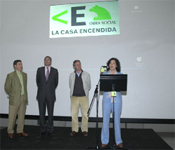
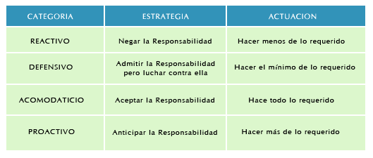
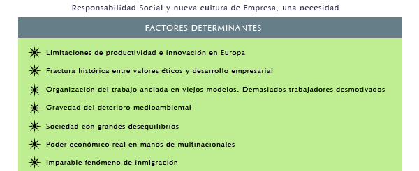

1.- introduccion al concepto de la responsabilidad social corporativa –RSC-
Nueva Economía, Globalización, Innovación, Gestión del Conocimiento... son conceptos que se han incorporado recientemente a la realidad de la gestión empresarial y la sociedad en general.
En realidad, lo que subyace detrás de estos términos es la búsqueda constante de soluciones para la Gestión de las Organizaciones, orientada a la creación de valor y a la competitividad sostenida en un entorno en constante cambio... Y si hay algo que, en la actualidad, es realmente constante es, precisamente eso, el cambio. La pregunta ante esta situación es clara:
La clave para responder a esta pregunta pasa por asumir que “no estamos en una época de cambios, sino en un cambio de época”...
La Gestión o Dirección de la Responsabilidad Social Empresarial se está convirtiendo en uno de los conceptos más notables en la Dirección de Empresas. Prueba de ello son los distintos estudios, artículos, libros, conferencias y seminarios que en todo el mundo están surgiendo sobre la materia.Efectivamente, hoy nadie puede dudar que la capacidad de toda organización para aprender y asumir sus responsabilidades sociales más rápidamente que sus rivales es una de las mayores y más sostenibles ventajas competitivas para el futuro desarrollo y crecimiento de las empresas. Y, desde luego, esa capacidad para poder optimizar la “la responsabilidad” como recurso estratégico y diferencial mediante una gestión más inteligente, más eficaz y más eficiente, permite posicionar a cualquier entidad como una organización más preparada para sobrevivir en una economía en permanente estado de turbulencia.
Que la Responsabilidad Social Corporativa es una disciplina relativamente joven es algo obvio, sin embargo, el gran interés que despertó desde sus inicios, así como la intensidad de estudios, enfoques y modelos que han surgido al hilo de esta aparición, han conseguido un resultado espectacular, han conseguido arrojar cierta luz acerca de cómo poner en marcha iniciativas que permitan a las empresas gestionar convenientemente su diferenciación basada en la responsabilidad.
Las empresas españolas se enfrentan a retos sin precedentes y de gran impacto estratégico. Algunos de ellos podríamos definirlos como más tradicionales: bajo nivel de crecimiento, deslocalización, presión en márgenes y un entorno de mercado en el que hay una cierta saturación de nuevos productos y en el que es muy difícil diferenciar significativamente las marcas. Otros retos, están relacionados con aspectos intangibles, menos previsibles y en cierta medida más complejos de gestionar, pero están afectando a la propia esencia de la relación de los productores y distribuidores con los consumidores y la comunidad y, por lo tanto, a la marca.
El efecto combinado de estos retos supone que las compañías deben buscar vías innovadoras de diferenciación, creación de valor y mitigación y gestión de los riesgos.
Las compañías líderes están desarrollando estrategias centradas en potenciar la confianza en la marca y el crecimiento y efectividad de las mismas, entre las cuales las estrategias de Reputación y Responsabilidad Social Corporativa (RSC) que tienen una importancia fundamental.
La responsabilidad social no es algo novedoso en el mundo empresarial, aunque en estos últimos años está adquiriendo una nueva dimensión por el especial interés que conlleva, demandando una gestión cuidada como valor estratégico, que supere lo anecdótico o lo filantrópico. Cualquier empresa consolidada que se analice desarrolla diversidad de acciones de responsabilidad social respecto a los principales grupos de interés con los que se relaciona: trabajadores, clientes, proveedores y la sociedad en general
La responsabilidad social corporativa es un intento de moralizar la actividad de la empresa al incorporarla practicas éticas de responsabilidad, de reciprocidad y de obligación, desde la idea prevalente de entender que ello puede convertirse en una ventaja competitiva.
¿Cuál es la empresa que ante un problema familiar grave o una necesidad acuciante de un trabajador no tiene el mínimo interés de intentar ofrecerle su ayuda?
¿Cuál es la empresa que se despreocupa de que los productos que fabrica puedan generar daños graves al medio ambiente?
¿Cuál es la empresa asentada en un municipio de pequeño o mediano tamaño que no colabora de alguna forma en una importante iniciativa que el Ayuntamiento promueve para el desarrollo municipal y para la que se le solicita una ayuda que puede ofrecer?
Posiblemente se piense que estas son cosas interesantes pero que no forman parte del cometido empresarial que es ofrecer productos de calidad a un buen precio y obtener de ello un beneficio económico. Bien, ello es cierto solo en parte, pero lo que no conviene a estas alturas es confundir a los verdaderos empresarios que crean riqueza y bienestar en nuestra sociedad, con los negociantes o los meros especuladores que se mueven exclusivamente por el afán personal de lucro, en el plazo más inmediato posible, contribuyendo bien poco o nada a la sociedad de la que se aprovechan continuamente.
En realidad, en un mismo entorno conviven organizaciones preocupadas por los valores propios de una sociedad humanizada e individuos o colectivos guiados exclusivamente por fines materialistas, incluso no éticos.
La satisfacción de las expectativas de los clientes estaba limitada tradicionalmente a la calidad de los productos y bienes; sin embargo, hoy en día, la clave es “construir confianza”, que no es una cuestión de publicidad o marketing, sino de “consistencia y coherencia en hacer lo que decimos que hacemos”.
La Responsabilidad Social Corporativa constituye para la empresa un marco integrador de sus políticas y actuaciones con los clientes, accionistas, empleados y todos los grupos de interés con los que se relaciona. Ello le permite desarrollar su labor en una sociedad avanzada que plantea a las empresas la satisfacción de nuevas y más exigentes demandas y expectativas.
La Responsabilidad Social de la Empresa, está estructurado en una primera parte en las razones del porqué en los últimos años stakeholders y el consumidor común demandan de la empresa una mayor participación en el área social y una actitud proactiva con el entorno donde se desarrolla.
Desde este enfoque hoy hablamos de desarrollo sostenible de la empresa[1], que es mucho más que un concepto ecológico, ya que plantea el reto de combinar economía dinámica con una sociedad que ofrezca oportunidades para todos, al tiempo que mejore la productividad de los recursos y se desliga crecimiento de la degradación del medio ambiente.
Este nuevo concepto tiene un fuerte impacto en la Unión Europea en el Tratado de Ámsterdam que entro en vigor en 1999 y que hace suyo el concepto de desarrollo sostenible en su articulo 2 ”La Unión tendrá los siguientes objetivos(...) promover el progreso económico y social y un alto nivel de empleo y conseguir un desarrollo equilibrado y sostenible principalmente mediante el fortalecimiento de la cohesión económica y social” Así mismo, estos preceptos de desarrollo sostenible se recogen en el Informe Brundtland[2], este Informe define el concepto como “el desarrollo que satisface las necesidades del presente sin poner en peligro la capacidad de las futuras generaciones para satisfacer sus propias necesidades”, en esencia se trata de garantizar una mejor calidad de vida para la población actual y futura, y de tomar conciencia de los riesgos que el actual modelo de desarrollo tiene respecto al mantenimiento de la sostenibilidad.
La Comisión de las Comunidades Europeas[3] entiende el desarrollo sostenible como un crecimiento basado en el pleno empleo, el respeto al medio ambiente y la competitividad de las empresas. Desde estas visiones el crecimiento económico se hace sobre la necesidad de modificar los parámetros de producción y consumo para conseguir pautas sostenibles desde la responsabilidad compartida, el progreso social como la consecución de los objetivos de erradicación de la pobreza y aumento de la calidad de vida, como principio de la solidaridad intra e intergeneracional, y respeto al medio ambiente, junto con una política social que impulse a las empresas de forma eficiente.
Desde esta nueva óptica de RSC las dos ideas principales son:
- El desarrollo como dimensión económica, social y medioambiental.
- La responsabilidad ante las generaciones futuras de dejar sufriente recurso social, medioambiental y económico para que puedan disfrutar de al menos el mismo grado de bienestar que la generación actual.
Dos son las grandes estrategias para aproximarse progresivamente a un crecimiento económico fundamentado en el desarrollo sostenible:
La estrategia procedente de la acción publica en el ámbito europeo mediante una dinámica en cascada de políticas de sostenibilidad productiva mediante recomendaciones, reglamentos y dictámenes.
La estrategia procedente de la acción privada de responsabilidad social corporativa
La actividad empresarial va asociada implícitamente a los beneficios sociales que comporta, ya sea de manera expresa y voluntaria o incluso sin pretenderlo. Toda empresa que genera puestos de trabajo directos e indirectos, es fuente de riqueza social, más allá de los beneficios que generen sus productos y servicios a sus usuarios y a la propia empresa y sus accionistas.
Estos beneficios podrán ser reinvertidos en la empresa para asegurar su crecimiento y seguir generando riqueza, y se convertirán en manos de sus receptores, junto a los salarios percibidos por sus colaboradores, en fuente de consumo, además de aportar ingresos a la Administración para contribuir al desarrollo económico del municipio, región o país, socializándose así la riqueza generada.
Los mercados son cada vez más competitivos y las empresas han visto en la RSC una oportunidad de diferenciarse y crear ventajas competitivas. La RSC se mueve en el ámbito de lo voluntario, de la competitividad. La RSC es una oportunidad para que la empresa conozca mejor el entorno con el que se relaciona y responda adecuada y rápidamente a los cambios. Por otro lado, la RSC es una eficaz herramienta de minimización del riesgo social, ambiental y de la reputación de la empresa.
La RSC se origina a partir de una decisión que toman los empresarios y directivos de la organización. Existe una nueva generación de directivos y empresarios que, conscientes del impacto social y ambiental de su actividad, se comprometen con una gestión responsable e implantan prácticas sostenibles. Sin duda, factores como la formación o el entorno en el que desarrollan su actividad han propiciado la aparición de estos "nuevos" profesionales.
El desarrollo espectacular de la RSC, el creciente interés por estos temas y la implantación de prácticas de gestión sostenible en las empresas tiene origen en una serie de causas que han impulsado este fenómeno. Algunos de los principales motivos que fortalecen el desarrollo de la RSC son:
{kind=link}
{kind=link}
{kind=link}
{kind=link}
{kind=link}
{kind=link}
{kind=link}
{kind=link}
{kind=link}
{kind=link}
{kind=link}
El concepto de Responsabilidad Social de la Empresa, se ajusta sobretodo a lo que en términos anglosajones se entiende como Corporate Governance. La RSE se entiende a grosso modo cómo la acción conjunta de toda la empresa concienciada, trabajadores, directivos y dueños, del papel que tiene ésta como unidad de negocio que crea valor y que pervive en un espacio del que se lucra.
Concienciación en el plano social, de ayuda a los más desfavorecidos y de respeto a los consumidores, concienciación ambiental de sostenibilidad y responsabilidad con el medio ambiente y concienciación económica de prácticas leales, transparentes en el manejo de sus finanzas y de inversiones socialmente responsables. Es decir, la Empresa Buena. Este modelo de empresa de acuerdo con el “Código del buen gobierno de la empresa sostenible”, que ha sido elaborado por las tres entidades impulsoras del Foro de Desarrollo Sostenible: IESE, PricewaterhouseCoopers y Fundación Entorno, se caracterizan porque: “crea valor económico, medioambiental y social a corto y largo plazo, contribuyendo de esta forma al aumento del bienestar de las generaciones presentes y futuras, tanto en su entorno inmediato como en el planeta en general”.
La RSC es una herramienta que intenta integrar ciertos valores en la gestión empresarial ordinaria. Cuando atiende a sus interlocutores o grupos de interés, una empresa es capaz de gestionar mejor su propio desarrollo y sus resultados. En consecuencia las motivaciones que conducen a asumir los compromisos en materia de RSC son numerosos y variados.
Los factores externos son tan diversos como las propias iniciativas de RSC y tienen su origen en las actuaciones y presiones ejercidas por los inversores, los consumidores, las autoridades públicas, las ONGs, los sindicatos y otros grupos de interés.
Los factores internos pueden agruparse en torno a seis realidades principales: la reputación, la marca, la rentabilidad, la eficiencia, la contratación y la competitividad, y la gestión de riesgos. Estos son los factores que determinan los compromisos en materia de RSC.
Toda empresa que desee implantar políticas y prácticas de RSC debe responder a estas cuestiones iniciales o Preguntas Básicas:
|
Estas preguntas sobre la RSC permiten a la empresa reflexionar sobre la verdadera naturaleza de su actividad y construir una base sólida sobre la que progresar adecuadamente.
El los últimos años han proliferado las Declaraciones de RSC de carácter internacional o local, lo que ha contribuido a divulgar este nuevo paradigma de gestión. Estas declaraciones generales se han desarrollado en documentos de carácter sectorial para facilitar la implantación de las prácticas de RSC en función de la naturaleza de cada actividad.
La RSC parte del supuesto de que las empresas cumplen con las exigencias normativas y voluntariamente invierten en capital humano, entorno y en las relaciones con los interlocutores o stakeholders. Una empresa actúa de forma socialmente responsable cuando sus iniciativas tienen en cuenta los siguientes criterios:
- Se desarrolla de forma voluntaria, yendo algunos pasos más allá de las normas legales.
- Hay interacción con los stakeholders mediante un dialogo social fruto de la confianza reciproca.
- Las preocupaciones sociales y ambientales están integradas en todas sus actuaciones empresariales.
La participación empresarial en el esfuerzo colectivo de sostenibilidad y búsqueda de la cohesión social es la razón de ser de una economía globalizada, en la que el desarrollo exige hacer compatible los beneficios con el desarrollo sostenible.
Las empresas son el problema pero también la solución, ya que ellas serán las primeras interesadas en una excelente gestión de los recursos. Además, la empresa forma parte de la sociedad, de la que participa en sus preocupaciones y valores. La empresa conocerá el éxito o el fracaso en función de las buenas relaciones que sepa entretejer con las diferentes partes interesadas, sus stakeholders.
En este sentido la empresa debe responder ante sus accionistas, pero también debe hacerlo ante sus partes interesadas, estableciendo una relación de confianza y colaboración, de lo contrario no sobrevivirá en el mercado. En definitiva, la empresa no debe olvidar que es la sociedad la que le otorga su derecho a operar en mercado, sino esta abocada al fracaso.
Todo esto no significa que la empresa ahora sea una ONG, sino que las empresas deben ser eficientes, rentables e innovadoras, han de ser capaces de generar riqueza y prosperidad, pero no a cualquier precio ni de cualquier manera. La sociedad esta inmersa en cambios vertiginosos sociales, tecnológicos y económicos y la empresa participa plenamente en esta dinámica, de hecho es ella misma artífice de dichos cambios: Quedarse anclada en modelos propios de otros tiempos es una apuesta segura hacia el fracaso.
La Responsabilidad de la Empresa se distingue en cuatro vertientes fundamentales:
Responsabilidad económica. Las empresas se crean para proporcionar bienes y servicios que satisfagan las expectativas y necesidades de los clientes por un precio justo. Desde esta naturaleza económica las empresas tienen la responsabilidad objetiva de maximizar sus beneficios para dar satisfacción a los grupos de interés que perviven en su seño.
Responsabilidad legal. Las empresas deben actuar desde el reconocimiento delas leyes y preceptos legales, que limitan su actividad en el funcionamiento del mercado y que han sido dadas por la ciudadanía para conseguir el equilibrio social.
Responsabilidad ética. Tiene que ver con los principios de justicia, equidad y moralidad que esperan los grupos de interés.
Responsabilidad filantrópica. La sociedad espera de las empresas su compromiso con el desarrollo y la protección del bienestar desde la óptica de la reversibilidad social de las empresas.
Por contra la Responsabilidad Social de la Empresa se vislumbra desde las definiciones clásicas como referencia a “las decisiones y acciones tomadas por razones que al menos parcialmente se encuentran más allá de los intereses económicos y técnicos de la empresa”[4]
De esta forma la empresa puede tener intereses, motivaciones y competencia sobre asuntos sociales, que no se corresponde estrictamente con la simple actividad productiva y comercial entendida como generadora de benéficos, ya que las acciones de responsabilidad social pueden ayudar a mejorar el contexto en el que se mueve la empresa, indirectamente, incrementar sus benéficos y reforzar su posición competitiva..
La acción social de la empresa o actividades de filantropía empresarial, es hoy una realidad en todo el mundo desarrollado y manifiesta un rápido crecimiento en todos los países. La mayoría de las grandes empresas practica la acción social, como también un número creciente de medianas y pequeñas empresas. En consecuencia, las Administraciones Públicas y muchas entidades del tercer sector, fundaciones y asociaciones, cuentan con el apoyo empresarial como uno de los mecanismos de financiación.
Se entiende por acción social de la empresa el conjunto de acciones no lucrativas de la empresa, cuya misión es contribuir a mejorar la calidad de vida de las comunidades donde actúa, mediante proyectos sociales, formativos, culturales y medioambientales. Normalmente esta acción social se manifiesta mediante el patrocinio, el mecenazgo, la filantropía y la caridad.
En el transcurso de los últimos veinte años en España se ha registrado un fuerte impulso a las acciones sociales de filantropía. No existen registros sistemáticos ni estadísticas de esta actividad, pero algunos estudios sitúan en más de 300 millones de euros anuales las actividades de filantropía empresarial, sin contar con las actividades de obra social de las cajas de ahorro que en 2004 fue de 1.163 millones de euros.
Algunas de estas razones del desarrollo de actividades de acción social se deben a:
Fuerte crecimiento en las últimas décadas de la demanda de la presencia de las empresas en el apoyo a actividades de razón social.
Reconsideración de la función social o ciudadana de la empresa
Incapacidad de autofinanciación de muchas actividades de interés general, de tipo cultural o sanitario, y presión de las necesidades económicas crecientes de un amplio colectivo de organizaciones públicas y privadas no lucrativas.
Mejora del trato fiscal y legal a estas actividades.
Desarrollo de las fundaciones como brazo gestor de las actividades filantrópicas.
Esta acción social corporativa se produce por el interés de las empresas en incrementar su valor en la comunidad en la opera, que influye directamente en sus oportunidades competitivas, desde una relación positiva, así las ventajas que reciben son:
- Mejora de la imagen de marca o de la empresa.
- Incremento de la notoriedad.
- Comunicar con causa y Ampliar su mercado meta.
- Obtener interrelaciones con el sector publico y la sociedad civil organizada
Desde esta perspectiva se puede concluir que la RSC, hay que enfocarla desde cuatro ámbitos bien definidos:
Aspecto laboral: cumplimiento de las normas de trabajo, respeto al trabajador en todos los niveles jerárquicos y puesta en marcha de códigos de conducta y principios de la OIT[1]
Aspecto económico: elaboración de cuentas transparentes y públicas, e inversiones socialmente responsables (utilizando criterios éticos y de exclusión, a la hora de invertir).
Aspecto ambiental: respetando el medio ambiente y usando sellos de calidad ecológica, o alusión directa al consumidor de cómo se obtuvo el producto, o se prestó el servicio.
Aspecto social: invertir un porcentaje de las ganancias en proyectos que ayuden a mejorar el nivel de vida de personas sin recursos. O tener proyectos de vinculación a colectivos desfavorecidos.
No hay que olvidar que las empresas existen para producir mercancías o servicios que la sociedad desea y necesita, además de generar el beneficio económico a la inversión, y ello en un clima de estabilidad y confianza. Por todo ello, el cumplimiento de este objetivo es su primera y principal responsabilidad. Si fracasa en esta misión, no puede esperarse que asuma otras. La empresa, sus propietarios y otros partícipes dependen de la sociedad donde operan en cuanto a su existencia y prosperidad, pero también tienen respecto a ella importantes obligaciones.
Desde perspectivas negativas de RSC, una corriente de pensamiento ha venido considerando los objetivos sociales y económicos como incompatibles, probablemente porque la RSC ha adolecido de estar su contenido demasiado vinculado a la filosofía moral, alejada de una visión de manegement estructural y estratégica.
Este enfoque, netamente financiero, liderado por Milton Friedman, Premio Nóbel de Economía y creador de la Escuela de Chicago, pone el enfoque en los accionistas como elemento principal y considera que los directivos deben de actuar como agentes defendiendo exclusivamente los intereses de los propietarios de las compañías, en tanto que satisfacer los intereses de otros grupos repercutiría negativamente en el valor de las empresas y lesionaría los intereses,“ los únicos legítimos”, de los accionistas.
A pesar de sus evidentes beneficios, la RSC también se enfrenta a críticas e impedimentos en contra de su implantación en las empresas. Si no fuera así, seguramente todas las empresas implantarían prácticas de RSC. Conocer estas críticas permite reforzar los argumentos y construir un concepto de RSC más sólido, a la vez que más sutil y matizado.
La crítica más conocida es la de Milton Friedman y su célebre "the business of business is business". A pesar de ser una postura superada ya hace tiempo, y en cierta medida matizada por el propio autor, todavía tiene acérrimos defensores que se enfocan en una idea de empresa única y exclusivamente económica, olvidando cualquier asomo de dimensión social.
También es frecuente asociar RSC con coste económico. Algunos autores la consideran como un autoimpuesto que supone un gasto añadido para la organización. Este argumento nace de la confusión entre RSC y acción social. La realidad es que una empresa puede ser perfectamente responsable sin dedicar un euro a acción social y, al contrario, una organización puede ser tremendamente irresponsable aunque dedique grandes cantidades de dinero a actividades filantrópicas.
Otra crítica derivada de la una idea asistencial de la RSC es que los accionistas son los dueños de la empresa y son ellos los que deben decidir si deben dedicar recursos para los colectivos desfavorecidos. Por tanto, se trata de una decisión personal que no pueden tomar los directivos de la empresa con el dinero de los accionistas. Dos cosas hay que decir a esto. Aunque los recursos dedicados a acción social generen el mismo beneficio para el destinatario procedan del accionista o de la empresa, no tienen el mismo efecto en cuanto a la creación de cultura, imagen y reputación de la empresa. Por otra parte, ¿son los accionistas los únicos "propietarios" de la empresa? Legalmente, no hay discusión, pero sin duda, los grupos de interés también reciben valor creado por la empresa y tienen cierta capacidad de influencia en la gestión de la empresa.
Una crítica muy extendida es que la RSC es una herramienta publicitaria y de relaciones públicas. Es cierto que muchas organizaciones hacen poco y dice que hacen mucho. El reto es hacer lo que dicen que hacen y asumir la RSC de una manera más integral, no como una solución cosmética y superficial. Esta perversión de la RSC se deriva de entender la RSC como un medio y no como un fin en sí misma.
Desde el lado profesional y directivo se argumenta que no se ocupan de la RSC porque están centrados en el core businnes de la empresa. De nuevo, se entiende a la RSC como algo superficial, accesorio, de lo que se puede prescindir. Pero como se ha visto, la RSC trata de las operaciones comerciales y de las relaciones cotidianas con los grupos de interés (clientes, proveedores, empleados,...) ¿no es eso core business?
A menudo también se esgrime el argumento en contra de la RSC de que lo social es responsabilidad del gobierno y de las organizaciones sociales. Sin duda, esto es así, pero esta responsabilidad no es exclusiva y todos los ciudadanos son responsables del desarrollo y bienestar de la sociedad. La empresa, como ciudadano corporativo que es, contribuye con su actividad a la mejora de la comunidad y debe minimizar las externalidades negativas que se deriven de sus operaciones. Cada agente debe asumir su responsabilidad social desde su rol en la sociedad y cooperando con otras instituciones para multiplicar el beneficio de las acciones emprendidas. Un buen ejemplo de esto es la creciente colaboración entre las empresas y organizaciones civiles u ONGs.
Una última crítica o impedimento a la implantación de la RSC es que supone nuevos riesgos para la empresa. Algunos directivos ven en la RSC una exigencia de transparencia que puede desvelar algunas debilidades de la empresa. También se suele decir que la RSC estimula el desarrollo normativo de los aspectos sociales y ambientales de la gestión empresarial.
En cierta medida estas apreciaciones tienen parte de verdad. Efectivamente, algunas de las empresas líderes en la implantación de prácticas responsables sienten que se han puesto en el centro de las miradas y que son las más criticadas. Esto es una paradoja que desincentiva a las empresas, pues ven que es mejor no hacer nada ante el temor a ser criticadas.
La corriente positiva de pensamiento estratégico de RSC sostiene que el comportamiento socialmente responsable no tiene por qué ser incompatible con la creación de valor y la participación de los interesados en la compañía “stakeholders”, desde este punto de vista el gobierno de la empresa es un proceso complejo de negociación que busca equilibrar intereses de todos los grupos que participan de forma directa e indirecta en la marcha empresarial.
Si, los comportamientos socialmente responsables inducen efectos positivos a largo plazo que contribuyen a aumentar el rendimiento y valor de las empresas compensando la aparente expropiación sufrida por los accionistas, en tanto que mejoran las relaciones del entorno, reducen riesgos y aumentan la reputación, rigiéndose por el principio de sacrificar beneficios inmediatos a cambio de maximizar en el largo plazo el valor para el total de los grupos de interés de la empresa.
La satisfacción de los clientes con una compañía está condicionada por las relaciones que ésta tiene con los empleados, la sociedad y otros colectivos y, por tanto, los consumidores están dispuestos a penalizar a las compañías no responsables.
La Responsabilidad Social Corporativa es el compromiso de mantener un comportamiento corporativo autoexigente y transparente que responda a las expectativas de los diferentes stakeholders o grupos de interés: accionistas, empleados, proveedores, consumidores, sociedad, … Es la forma de construir confianza, que contribuye a la reputación y genera valor para la empresa. Es un factor competitivo para alcanzar el liderazgo, sedimentando en los valores de la empresa, la ética, el buen gobierno y la transparencia empresarial.
Teniendo en cuenta que una de las finalidades de toda empresa es optimizar beneficios para enfrentarse a la competitividad del mercado y asegurar en lo posible su pervivencia, ¿por qué los empresarios deberían seleccionar inversiones específicas en Responsabilidad Social, más allá de las estrictamente esenciales y exigibles legalmente? ¿Dónde está el límite entre las normas reglamentarias y las voluntarias?.
En realidad, aún es posible mantener cierta despreocupación ante estos temas y pasar desapercibido, por ejemplo, disimulando ciertos tipos de "desviaciones", aprovechándose de trabajadores inmigrantes, pagándoles sueldos ínfimos con horarios extenuantes, no aplicando con rigor las normas de seguridad en el trabajo, no formando debidamente a los trabajadores, no cuidando suficientemente los aspectos medioambientales y no ofreciendo productos de la necesaria calidad, y todo ello para obtener el máximo beneficio. Sin embargo, cuando algunas de tales carencias se ponen al descubierto de diferentes formas, por la autoridad competente, por sus clientes, etc., es sabido que los costes pueden ser incalculables.
Estas perspectivas de acometer la RSC tiene que ver con las respuestas de las empresas que pueden ser según Clarkson[5] como sigue:

Desde la perspectiva avanzada y proactiva de la mejora continua de la calidad muchas organizaciones plantean sus principios, su declaración de intenciones, o su código de buenas prácticas, pero el camino a la excelencia debe implementar cambios desde varias perspectivas:
Desde el punto de vista de la dirección
Desde el punto de vista interno laboral
Desde el punto de vista interno financiero
Desde el punto de vista interno productivo
Lo anterior debe cobijar tanto a las propias empresas como a sus filiales y proveedores. Cuando una empresa grande exige de una pequeña o mediana con la que trabaja, que siga criterios de responsabilidad en cuanto a derechos humanos, laborales y en todos los sentidos, estará haciendo que su proveedor se preocupe e intente implementar estas buenas prácticas en su empresa.
Todo ello es así porque con certeza, el motor que mueve a gestionar la RSC en las empresas no es puramente financiero, se alimenta de forma proactiva y voluntaria, más allá de los aspectos económicos, en una mejora de la reputación y en una obtención de ventajas competitivas con una visión de negocio a largo plazo. La toma de decisiones empresariales tendrá siempre irremisiblemente una dimensión moral, la cual puede ser fácil de vulnerar, pero no tanto de controlar a medio y largo plazo sus efectos perversos.
La RSC ha experimentado una progresión paralela a la evolución histórica de la orientación de la empresa. Un resumen esquemático de esta evolución de las empresas y su nueva orientación puede ser:
- orientación a la producción (hasta los años treinta).
- orientación a las ventas (hasta los años ochenta).
- orientación al consumidor (hasta los años noventa.
- orientación al cliente (hasta el nuevo siglo).
- orientación a la competencia y la sociedad en general.
La orientación de la empresa a la sociedad a menudo ha comenzado como una reacción defensiva ante la presión de determinados grupos sociales. El reto es interiorizar la RSC y que las empresas tomen la iniciativa, pasando de acciones aisladas de carácter filantrópico y de comunicación a la verdadera integración de las demandas sociales y ambientales de las partes interesadas en sus actividades de negocio. Como dice Peter Drucker, "El administrador moderno, debe ser un activista político. Cada vez se dará mayor cuenta de que, en estos tiempos turbulentos, en adición a la gestión de su empresa, deberá convertirse en el líder e integrador de una sociedad pluralista".
La RSC es uno de los principios esenciales de lo que se denomina en términos empresariales "la nueva cultura de empresa". Junto a otros principios con los que se interrelaciona, tales como: visión a medio y largo plazo; ética, valor clave en todas las actuaciones; personas y capital intelectual, su principal activo; necesidad de innovación y mejora continua en todos los ámbitos en un marco de Calidad Total.

La nueva estrategia global europea para esta década se marca unos objetivos básicos, que son:
- Poseer la economía basada en el conocimiento más competitiva y dinámica del mundo,
- Capaz de conseguir un crecimiento empleos,
- Y una mayor cohesión social
Este desafío, traducido a la operativa de las empresas, representa alcanzar el reto de dar respuesta satisfactoria a metas relativas a responsabilidades económicas, sociales y medioambientales.
Para ello se utilizan los informes de triple base "triple bottom line" en los balances anuales de las empresas que ya se empiezan a realizar por las más importantes organizaciones.Pero no todas la compañías tienen cabida en la RSC, aunque esta supone la mayor parte de las veces una cuestión de estrategia competitiva, hay una serie de consideraciones o filtros a algunas de ellas que les impide estar en esta nueva categoría empresarial de compromiso social.
Según el tipo de negocio y de acuerdo con la Social Investment Forum SIF[6] se viene aplicando unos filtros de selección que condicionan el tipo de actividad empresarial admitido, de esta forma es habitual la exclusión total o parcial de empresas dedicadas a la fabricación de productos y/o comercialización de tabacos, bebidas alcohólicas, servicios relacionados con el juego, armamento, energía nuclear, pornografía, contracepción y abortivos ,etc.

¡Enhorabuena! has llegado al final del Tema 1, para poder realizar la autoevaluación asegúrate de haber
revisado bien la teoría
y pulsa el botón de Marcar Tema Completado.